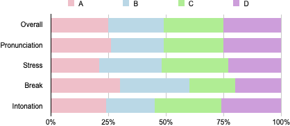
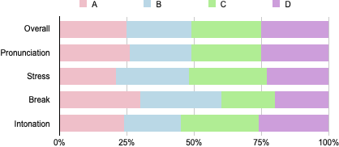
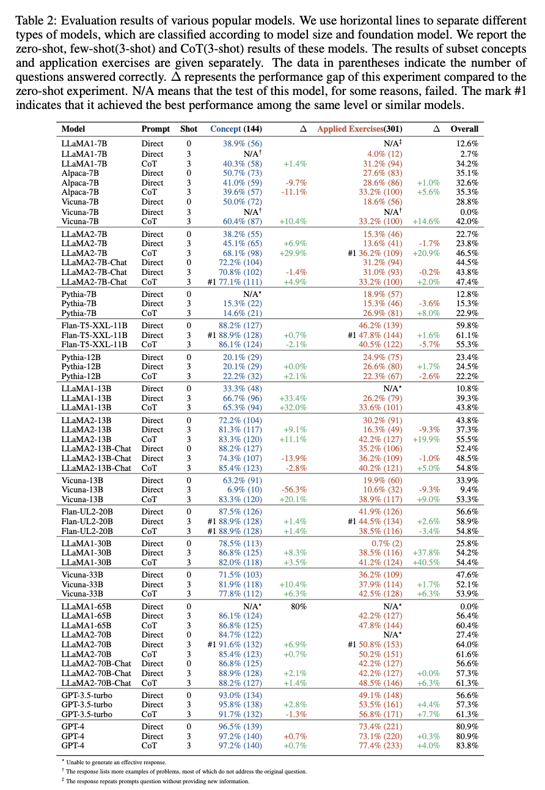
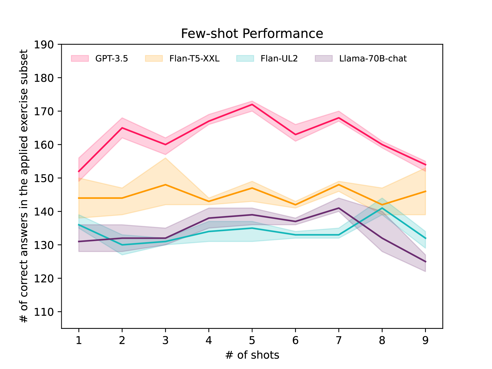
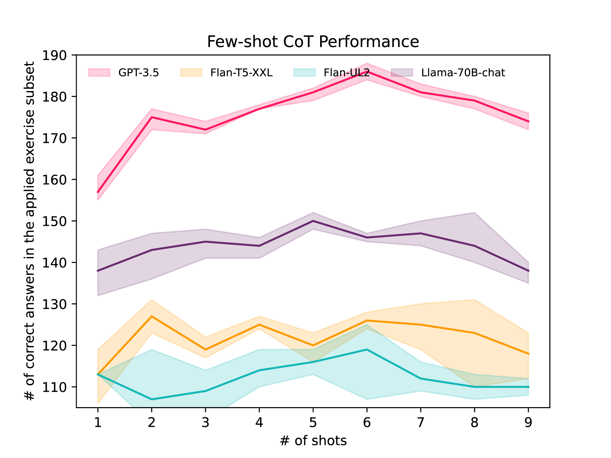

|
 |
We introduce a new multiple-choice question dataset to evaluate the effectiveness of LLMs in the aforementioned scenarios, including understanding and application of spoken language knowledge, and investigate the influence of various prompting techniques such as zero- and few-shot method (prepending the question with question-answer exemplars), chain-of-thought (CoT, think step-by-step), in-domain exampler and external tools (Google, Wikipedia). We conducted large-scale evaluation on popular LLMs (20 distinct models) using these methods, and advanced method achieved significant performance improvements compared to the zero-shot baseline in the practical questions reasoning (GPT-3.5, 49.1% -> 63.1%; LLaMA2-70B-Chat, 42.2% -> 48.6%). We found that models of different sizes have good understanding of concepts in phonetics, phonology, and second language acquisition, but show limitations in reasoning for real-world problems. Additionally, we also explore preliminary findings on conversational communication.
We introduce a new dataset that covers topics of phonetics, phonology, and second language acquisition, which are frequently addressed in language learning. The dataset consists of two parts:
(1) a set of concepts (144 questions) that are mainly designed to test the large models' knowledge of spoken language, such as "what is language transfer" and "how many classifications of consonants are there based on pronunciation?" It is mainly sampled from A Course in Phonetics
.
(2) Application exercises (301 questions). We designed this section of data from aspects such as pronunciation, pause, stress, and intonation. An example is shown in the figure above. These two parts of data are organized in the form of multiple-choice questions, with each question having a unique answer. The left image shows the distribution of answers across the entire dataset and subset. The right image shows the proportion of question types in the second part of the dataset.
You can access this datasets from the link.
|
 |
|  |
We conducted a large-scale experiment to test currently popular models. To obtain a comprehensive and detailed conclusion, we analyzed the following aspects.
Models with more parameters tend to have better performance and stability: We analyzed the results of all prompt methods for all models. The graph shows that, on both sub-datasets, models with parameter numbers ranging from 7B to 13B have higher performance variance and relatively lower mean performance. Models with parameter numbers greater than 20B have more stable performance.
LLM excels in concept memorization but has weaker ability in applying knowledge for reasoning: Even on a relatively small model (7B), the accuracy of concept memorization can reach nearly 80%, and a model with a size of around 11B can achieve the level of GPT3.5. However, for reasoning applications, models with sizes of 70B and the GPT series models have an absolute advantage.
Knowledge preference: We analyzed whether these models have specific preferences for certain types of knowledge. The graph above shows the correct answer rates of the models for different types of questions in the reasoning test. We can see that they have similar performance. It's worth noting that our multiple-choice questions have four options, and the probability of guessing correctly is about 25%.
Answer Bias: We selected several "representative" models and conducted corresponding distribution analysis of generated answers. It can be observed that, apart from GPT3.5 and GPT4, the other models exhibit significant answer bias.
|  |  |
Few-shots & CoT: Increasing the number of examples can improve performance to a limited extent. Increasing the examples of the thinking chain will have a more significant and stable effect on models above 70B. However, for smaller models, these prompts may already exceed their capabilities, resulting in a loss of performance.
In-Domain Prompt v.s. Out Of Domain Prompt: We used prompts from different domains for two models capable of responding to CoT. In most cases, most examples are not carefully selected or designed. We used domain-specific prompts for different types of questions. Our approach has shown significant advantages compared to more common examples. In the process of increasing examples, the model not only learned how to answer multiple-choice questions, but also gained some insights.
Self-Consistency: Although the solution to these phonological problems does not have as many reasoning paths as mathematical reasoning questions, we found that self-consistency can improve performance on the GPT3 model. However, for Llama, its occasional cleverness can be offset by multiple generated errors. The following are examples where GPT-3 successfully corrected errors while LLaMA failed unfer Self-Consistency.
Augmented Language Models: We provided two tools for use by GPT-3.5, but did not get better results. One piece of good news is that models using the tools can recognize their limitations and refuse to answer questions they are uncertain about, although this ability still seems relatively limited.
We explored zero-shot, few-shot, direct, and CoT prompts to phonology-related questions answering. These models all have strong conceptual knowledge and can achieve high accuracy with simple zero-shot and few-shot learning. For practical questions reasoning, we achieved significant performance improvements compared to the zero-shot baseline(GPT-3.5, 49.1% -> 63.1%; LLaMA2-70B-Chat, 42.2% -> 48.6%). However, the strongest GPT-4 achieved 77.4\% accuracy. This means there is significant room for improvement in their performance in real-world scenarios. These performances highlight the impressive Spoken Language Intelligence exhibited by LLMs, and Chatbots based on large language models possess significant potential to enhance conversational spoken language learning.